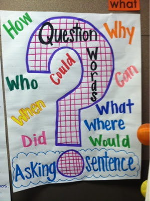

Ανοιχτά Δεδομένα στην Εκπαίδευση
 Τάσος Κουτουμάνος tafkey.eu — ΙΤΥΕ "ΔΙΟΦΑΝΤΟΣ"
Τάσος Κουτουμάνος tafkey.eu — ΙΤΥΕ "ΔΙΟΦΑΝΤΟΣ"
Open-*

- Κώδικας
- Λογισμικό
- Περιεχόμενο
- Δεδομένα
- Μεταδεδομένα
Data? Meta-data?
- Στατιστικά στοιχεία
- Analytics
- Μεταδεδομένα*
Φωτόδεντρο
- Φωτόδεντρο > LOR Μαθησιακά αντικείμενα
- Φωτόδεντρο > Video Εκπαιδευτικά βίντεο
- Φωτόδεντρο > Edusoft Εκπαιδευτικό λογισμικό
- Φωτόδεντρο > UGC Υλικό χρηστών
- Φωτόδεντρο > OEP Ανοιχτές εκπαιδευτικές πρακτικές
- Φωτόδεντρο > MEXT Εξωτερικές πηγές
- ...
- Φωτόδεντρο Aggregator ...
Photodentro OAI-PMH target*
Μεταδεδομένα;Πρότυπα, πρότυπα, πρότυπα!
Photodentro Search API
Πώς μπορώ να "ρωτήσω" το Φωτόδεντρο;
- Open, αλλά με νόημα!
- Πρότυπα, πρότυπα, πρότυπα!
- Search API
- ΑΘΗΝΑ-ΙΕΛ search api server
- Drupal Microsites test
Raw data.Now!*
We have seen some of the power and acceleration which happens when governments such as the UK and US have put data on the web.
But this is the tip of the iceberg.
Τα data είναι παντού....
στο περιεχόμενο, στα μεταδεδομένα, στις ταξινομίες, στα keywords, στις θεματικές και φυσικά στα analytics!
ο μόνος περιορισμός είναι η προστασία της ιδιωτικότητας*
... και εμείς!
Τέλος;
Όχι! Αυτή είναι μόνο η αρχή!
Η συνέχεια;
- European EDM για εκπαιδευτικό μετασχολιασμό...
- Φωτόδεντρο Vocabulary Bank
- Αναλυτικά στοιχεία πρόσβασης analytics
- Ψηφιακή Εκπαιδευτική πλατφόρμα e-me & e-me apps